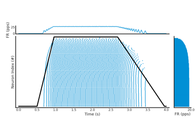
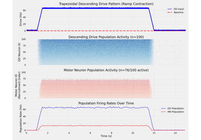
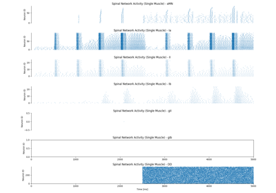

Basics#
This example gallery contains tutorials demonstrating core functionality and workflow patterns.
These examples cover the essential building blocks, from motor unit recruitment to EMG signal generation.
The examples are self-contained and can be run independently, though they may depend on each other for context.
Following the numbered order provides the best learning experience.

Spike Train Generation with Current Injection
Spike Train Generation with Current Injection

Spike Train Generation with Descending Drive
Spike Train Generation with Descending Drive

Spinal Network Simulation with Systematic Tendon Tap Protocol
Spinal Network Simulation with Systematic Tendon Tap Protocol